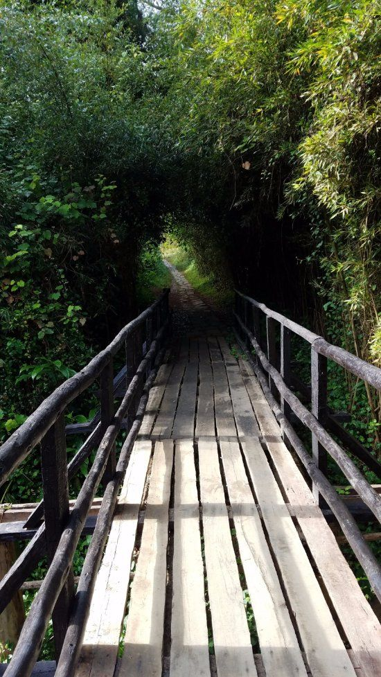
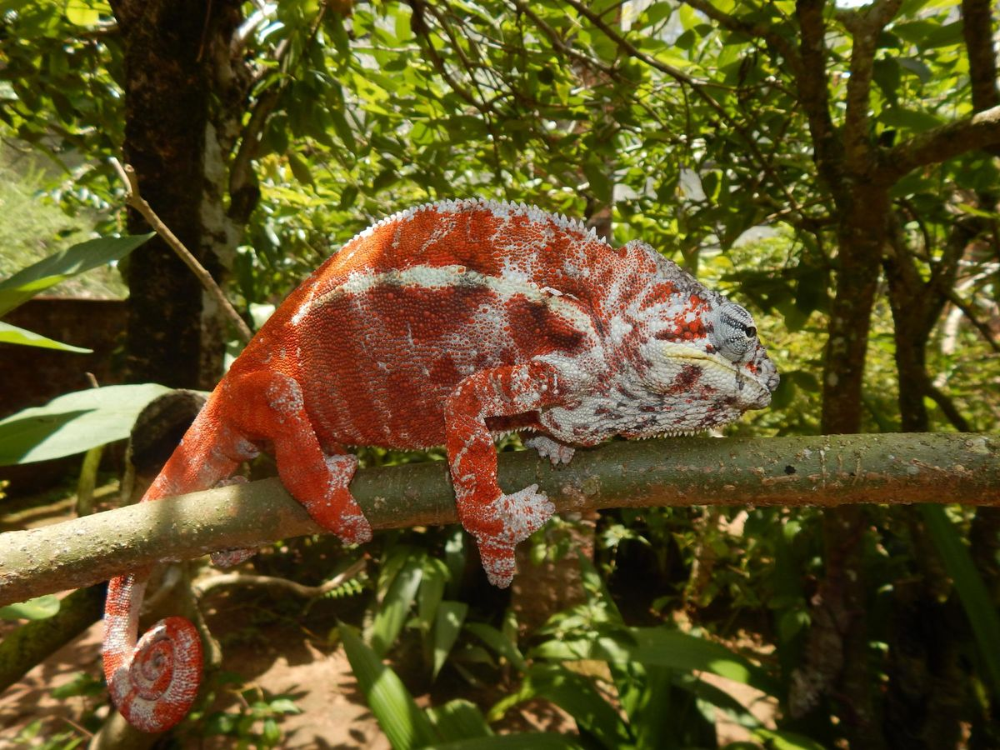
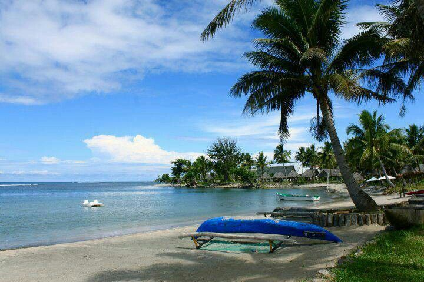
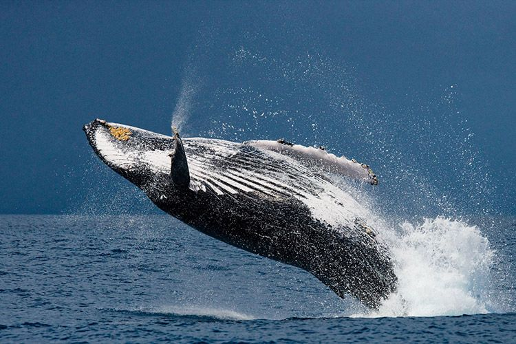

Rainforest canopies, lemur song at dawn, and an island where whales pass by every winter.
"From the rainforest to the reef, the East Coast is Madagascar at its most alive — a place best discovered slowly, one chapter at a time."

Le royaume de l'Indri Indri, le plus grand des lémuriens, dont le chant résonne chaque matin dans la canopée. Une immersion totale dans la forêt tropicale de l'Est.

Une réserve privée en bordure du canal des Pangalanes, où plusieurs espèces de lémuriens évoluent en semi-liberté au milieu d'une végétation luxuriante.

Un village de pêcheurs paisible, bordé de cocoteraies et de plages sauvages battues par l'océan Indien — une pause authentique loin des sentiers touristiques.

Une île bordée de lagons turquoise, célèbre pour l'observation des baleines à bosse entre juillet et septembre, et pour son ambiance créole décontractée.
Contact Ma'Tour Guide Madagascar and let's build your East Coast itinerary together.